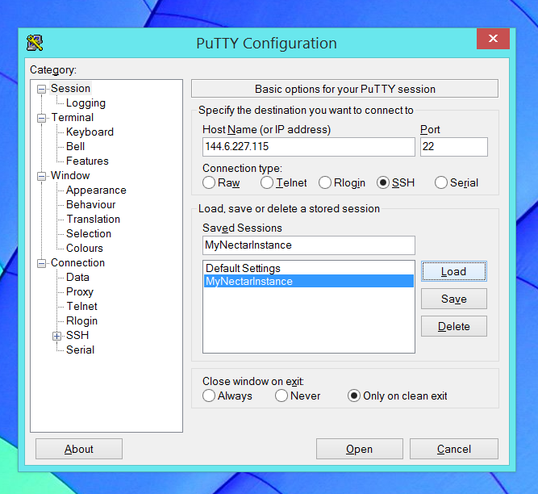
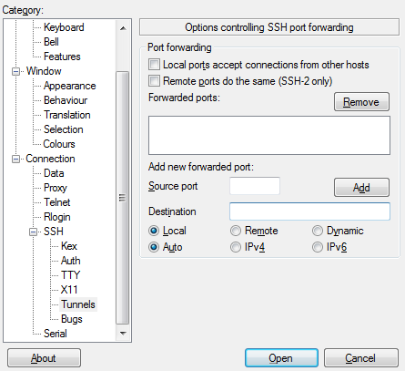
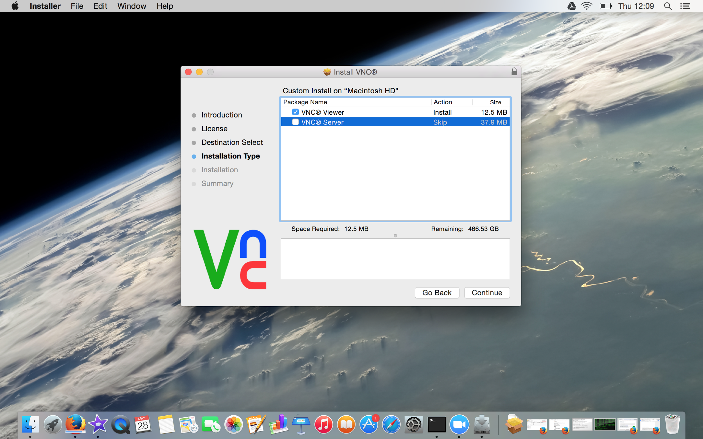
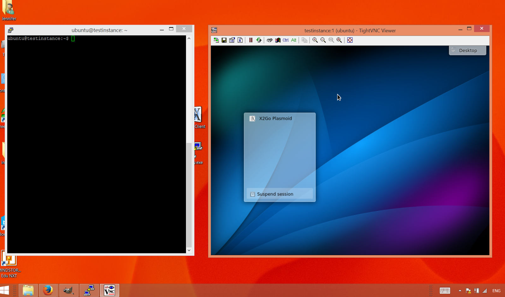
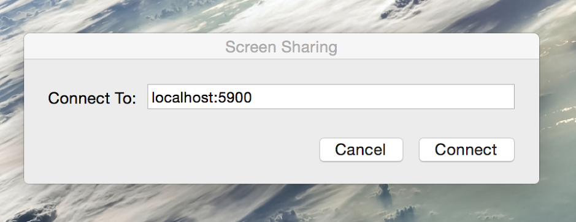
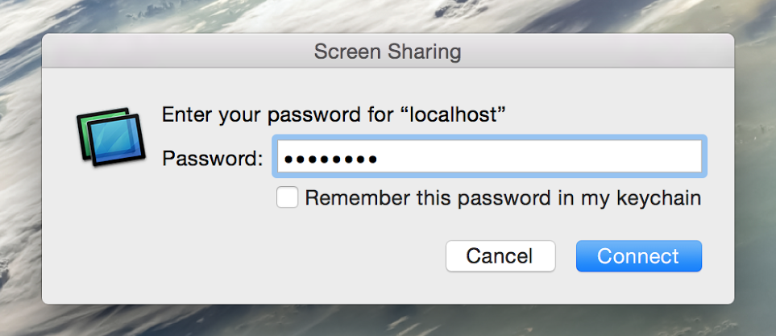
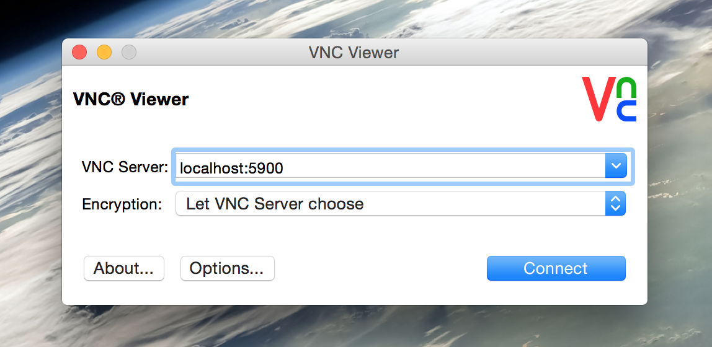
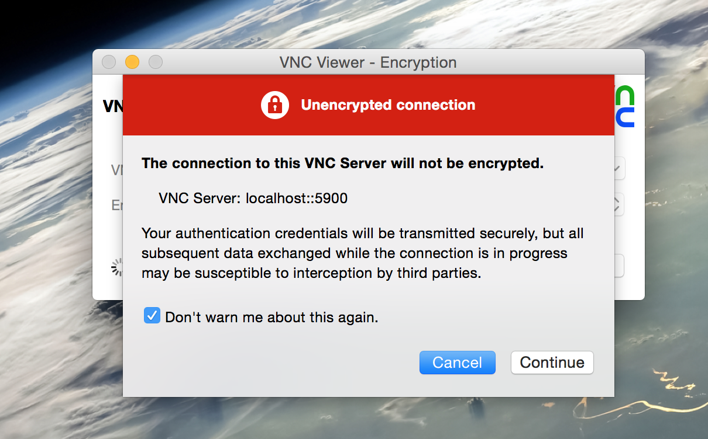
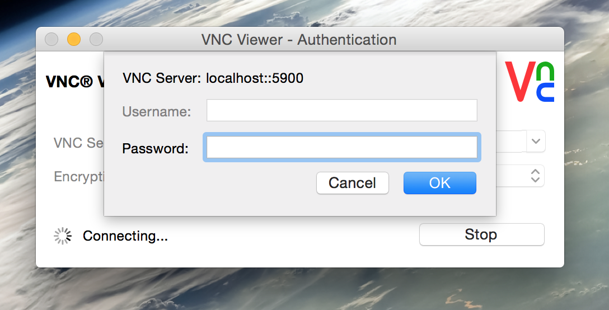
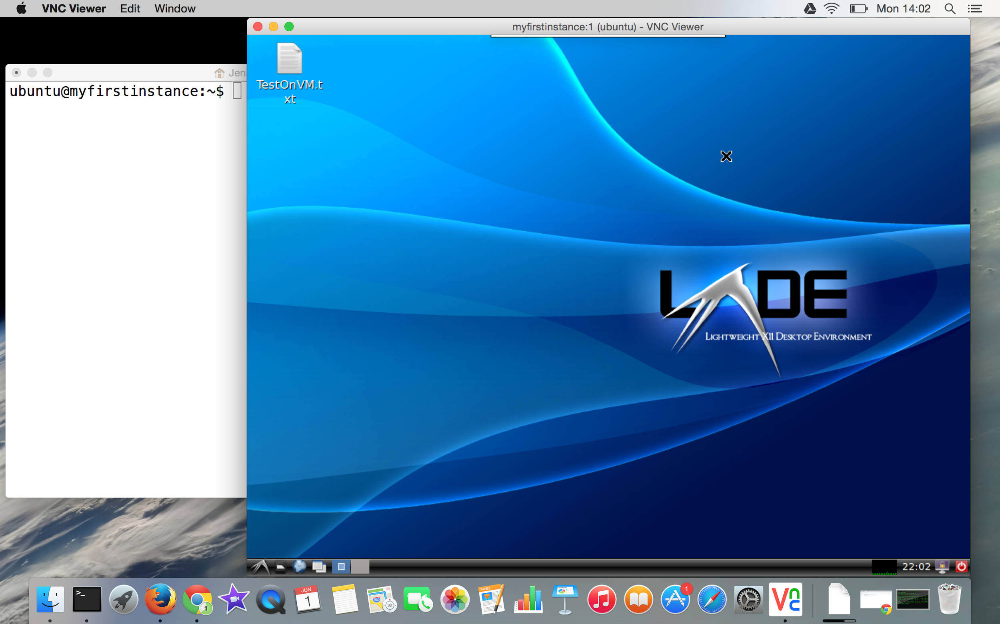

Module 7
Launching and Connecting
Sections of this module:
IntroductionCreate a ssh key
Launching an instance
Connect to the instance
Configuration and control
Connect to a remote desktop
Install a desktop environment
Connect with X2Go
Connect with VNC
Running several desktop environments
Graphical Interfaces on the ssh terminal
Install a web server
Managing storage
Summary
Appendix
View all sections on one page (Printer friendly)
Connect with VNC
7.3.4. Connecting with VNC
We will now connect to our remote desktop using VNC. We will first install the VNC Server on the instance, and then use a VNC Client (also called “viewer”) on our local computer to connect to the remote desktop.
Install the VNC Server on your instance
In this tutorial, we will use the VNC Server called vnc4server on our instance. For an overview of other servers, refer to the Ubuntu help page.
Step 1. Install VNC server
To install the server, type into your ssh terminal:
sudo apt-get install vnc4server
Confirm installation of the package with [Enter].
Step 2. Configure the VNC server
We will now have to edit a file in order to start up the right desktop environment.

The following instructions have been tested for Ubuntu 14.04 and 14.10. If you have another Ubuntu version on your instance, you may have to look online if the following instructions don’t work. Some more information is given at this link.
First, we have to start up the VNC server once, in order to create a password and generate the configuration file. In your ssh terminal, type:
vncserver
and you will be prompted to choose a password. This is a password which is used for the VNC server only — it is not the same as your ssh key (although you may of course choose the same passphrase)!
After you finished typing and confirming your password, we will shut down the vnc server again and change some settings. To shut it down, type:
vncserver -kill :1
Then, open the settings file:
nano .vnc/xstartup
In the editor that comes up, make the following changes:
Uncomment the following lines, by putting a ‘#’ in front of them:
# x-terminal-emulator -geometry 80x24+10+10 -ls -title "$VNCDESKTOP Desktop" & # x-window-manager &
Additionally, make the following changes to the file, depending on your desktop environment:
- Gnome :
- Add the following lines at the bottom of the file:
metacity & gnome-settings-daemon & gnome-panel &
- Add the following lines at the bottom of the file:
- KDE:
- Add the following line at the bottom of the file:
startkde &
- Add the following line at the bottom of the file:
- LXDE:
- Add the following lines at the bottom of the file:
lxterminal & /usr/bin/lxsession -s LXDE &
- Add the following lines at the bottom of the file:
- XFCE
- Add the following lines at the bottom of the file:
xrdb $HOME/.Xresources startxfce4 &
- Add the following lines at the bottom of the file:
Step 3. Start the server
To start the vnc server, you need to configure the resolution which your screen should have (You can change this to another resolution in the command below). To start with, choose a low resolution which will definitely fit into the screen on your local computer with some margin:
vncserver -geometry 1024x768 -depth 24
The result of the command will display a line similar to the following.
New '*hostname*:#* (*username*)' desktop is *hostname*:**#**
where hostname and username are replaced by your instances values, and a number is displayed instead of the hash #. Take note of this number following the colon (:). This will be part of the port number you will need in the SSH tunnel setup, which we will do in the next step. This will also be the number you will need to use to eventually terminate the server when you are finished using it (if you want to shut it down at all).
If you want to shut down the VNC server, type into your ssh terminal (use the number you have taken note of instead of the #):
vncserver -kill :#
For example, if your port number before was 1, type
vncserver -kill :1
Whenever you want to change your desktop environment (e.g. from LXDE to KDE), you have to shut down (“kill”) the vnc server with these commands. Then, you have to edit your .vnc/startup file as discussed in the last step, following the instructions for your desktop environment. Then, restart the VNC server again, as you have done earlier.
Connect to the remote desktop
If you tried to use a VNC client right now, it would not be accessible from outside, because our instance is protected by a firewall. When we launched our instance (as we did in this section), we have only allowed secure ssh connections on Port 22 (and insecure connections to web services on Port 80). VNC servers usually provide their services on Port 5900 (or 5901, 5902..). This Port is still being blocked by our firewall!
One way to get access to our VNC server would be to open up this port in our firewall and allow an insecure connection (remember: VNC does not have in-build encryption). This is not desirable — we want a secure connection, of course.
The safe way to do this is to “tunnel” all our VNC communications through SSH, which then encrypts all communication. The following steps will explain how this is done.
Step 1: Set up ssh tunneling
Be sure you have the number (#) you were given in the above vncserver command. We will use this number to determine the Destination Port. Use your number and add it to 5900. For example, if your number is 1, then 5901 will be you destination port.
Follow the steps below for your local computer’s operating system:
Linux / Mac
In a terminal on your local computer, create a tunnel from your local machine (Port 5900) to your instance (Port 5901) with this command:
ssh -i <path-to-your-keyfile> -L 5900:localhost:5901 -N -f -l ubuntu NNN.NNN.NNN.NNN
where you should replace the NNN.NNN.NNN.NNN with yours instance’s IP address, and <path-to-your-keyfile> is the path to where you have saved your ssh key.
Hint for Linux users: If you copy your private key to the /home/
The -f -N options in the above command cause the tunnel to run in the background: once you have typed in the password, the command line prompt returns to your terminal. If you want to close your ssh connection, you have to kill it. In your terminal on your local computer, type:
ps aux | grep ssh
In the printed result, find your ssh tunneling command and note the number on the left, which is displayed after your user name. One line of output for example looks like this:
ubuntu 52577 0.0 0.2 2512756 17076 …
In this example, 52577 is the process number
kill <the-ssh-tunnel-process-number>
If you don’t use the -N -f options, you will be logged into an ssh terminal to your instance, and can use it as usual to type commands on your instance. If you type logout or close the terminal, the ssh tunnel will close as well.
Windows
-
Launch PuTTY and load your previously saved configuration by selecting the session name and clicking Load. (If you have Putty open, close it and then re-open it to get to this window).
 -
Select SSH > Tunnels in the left pane. Enter these values:
Source port: 5900
Destination: localhost:5901
Then, click the Add button. Your tunnel will now appear in the list.  -
You can save the tunneling along with your session by selecting Session in the left pane. Click on your session name in the Saved Sessions pane, then click Save (or create a new name instead by typing in a new name, e.g. called “TunneledNectarSession”).
-
Now you can click Open to start the SSH terminal. The tunnel will now be active as long as the PuTTY terminal window stays open. You can use this SSH terminal as a shell into the instance as well (as we have been doing the whole time), while simultaneously having your remote desktop open.
-
The next time you run PuTTY, you must open these saved settings by selecting the name in the Saved Sessions pane and clicking Load, then clicking Open. Or, you can simply double-click the session name to load and run the saved session.
See also the section about SSH Tunnelling in the Appendix for more information.
Step 2: Install the VNC Client on your computer
We can connect to our desktop using a VNC Client (also often referred to as “VNC Viewer”). You may download any VNC viewer you want.
Here, we’ll suggest the following, depending on which OS your home Computer runs:
Ubuntu
You can use the pre-installed Remmina client.
Alternatively, install vinagre with the command
sudo apt-get install vinagre.
You can use the free RealVNC Viewer. Continue with the instructions below (Mac/Windows/Linux alternative client: RealVNC) if you would like to use RealVNC.
We recommend you use the default Remmina client to start with.
Windows
You can use the free RealVNC Viewer. Continue with the instructions below (Mac/Windows/Linux alternative client: RealVNC) if you would like to use RealVNC.
Alternatively, you can also use UltraVNC or TightVNC ( Note for TightVNC: Choose the “custom” installation mode and then select to only install the client, you may have to unselect the server).
Choose the client you want and install it. We suggest you use RealVNC for this tutorial.
Mac OS X
OS X has a VNC client built in. It’s been installed in every version of OS X since 10.4. It’s called Screen Sharing and it’s located in your CoreServices folder, a difficult to find folder which is part of OS X.
The easiest way to find screen sharing via the “spotlight search”: Type Cmd+Space to bring it up. Type “screen sharing” and the app should be found.
Or you can also find the application in this path:
/System/Library/CoreServices/Screen Sharing.app
or, as of OS X 10.10 Yosemite the containing folder is now located in
/System/Library/CoreServices/Applications
You can access it through the terminal (Applications Folder > Utilities > Terminal.app). In the terminal, type:
open /System/Library/CoreServices
or on OS X greater than 10.10:
open /System/Library/CoreServices/Applications
That will open a Finder window where you will see Screen Sharing and you can open it or create an alias if you want.
You can use the free RealVNC Viewer. Continue with the instructions below (Mac/Windows/Linux alternative client: RealVNC).
Mac/Windows/Linux alternative client: RealVNC
Download the client (the viewer) from the RealVNC website. When downloading, it may ask for your E-Mail, but you can specify some random details, the viewer will still work. When installing, choose to only install the client (the viewer):

When you connect (we will do this in a moment), it asks you whether you accept an insecure connection. Say yes (it will in fact be secure via our tunnel).
RealVNC by default compresses the colours to save bandwidth. To see your screen in full colour, you need to go to Options in the initial window, then disable The checkbox for *Adapt to network speed, and push up the slider to Best quality.
Step 3: Connect to the VNC server
Open your VNC client (“viewer”) of choice. This will generally be a very simple interface with just a few fields to fill. The following instructions are generic for all clients. There are also some more detailed instructions given below for some examples.
-
Choose VNC as a protocol, if the viewer asks for it.
-
As server (or host), specify “localhost”.
-
If a port specification is required, choose 5900. If you cannot find a port specification, you probably have to type “localhost:5900” instead of just “localhost” in the “server” (or “host”) field.
Now connect, and you should get a password prompt, in which you type the password you just chose for the VNC Server (not your ssh passphrase, unless you chose the same!). Then, you should get to the remote desktop.

Do not use any ssh or security options that clients may offer, because we have just done the ssh tunnel separately ourselves. Your connection will be secure. If you have followed the instructions above, your connection is secure, even if the vnc viewer says it is not (The VNC viewer does actually not realise it is running through the ssh tunnel).

Example on the image above: Connecting with TightVNC on a Windows machine. The Putty Terminal is displayed on the left.
Mac Example client: Screen sharing
To connect with the in-built Screen Sharing app, open it (Apple+Space and type “screen sharing and open it up). Into the text field, type *localhost:5900 *and then click “connect”:

You will be prompted for your password. That’s the password you selected when you set up the VNC Server in the previous step.

Now a window should open to the remote desktop.
Example client: RealVNC
Start the RealVNC client (on a Mac, you can find it via the spotlight search: Cmd+Space and then type “realVNC”. It will open a folder in which you find the executable).
To launch a connection, type “localhost:5900” into the text field. Leave the encryption setting on “Let VNC Server choose” and click “connect”.

When it asks you whether you accept an insecure connection, say yes (it will in fact be secure via our ssh tunnel).

You will now have to type in your password. That’s the password you chose when setting up the VNC server on your instance in the last step.

RealVNC by default compresses the colours to save bandwidth. To see your screen in full colour, you need to go to the realVNC “Options”. You can either do this in the initial login window, or when your remote desktop is open, mouse over the top of the window and select “options”.

In the options, disable The checkbox for Adapt to network speed, and push up the slider to Best quality (better quality will be slower but mostly you may want it anyway). Also enable the checkbox Scale to window size if you have issues with the window being too large for your desktop.
General troubleshooting
Your colours look a bit off?
Some clients (e.g. RealVNC and Remmina) use fewer colours and higher compression in order to reduce latency of your remote desktop. You have to change this settings in the client - each client is different so you might have to find out where you can change this.
In Remmina, you can create a saved session (by clicking on “new”) instead of using the default Quick Connect. You can change the settings for the colour quality there.
RealVNC by default compresses the colours to save bandwidth. To see your screen in full colour, you need to go to Options in the initial login window, then disable the checkbox Adapt to network speed, and push up the slider to Best quality.
Problems connecting?
Make sure your ssh tunnel is open and you have set the right port numbers. On Windows, your PuTTY session must be open and you must have configured the tunnel as described above.
Automatic start-up of the VNC server
With the current settings, you will have to manually re-start the Vnc server on your instance every time after you reboot the instance. We can automate this to save you this work, and start up the Vnc server automatically.
The easiest way is to add an execution command in a file. Log into your instance (via ssh terminal) and follow these instructions:
-
Verify the location of your VNC program by typing:
which vncserver
Most likely you will see /usr/bin/vncserver as result. We will assume this in the following. If you get something else, you will have to use your own path instead of this one. -
Create a file startVNC.sh (or call it whatever you want) in directory /etc/init.d:
sudo nano /etc/init.d/startVNC.sh - The editor will open. Put the following contents in the file (Note: If your username is other than ubuntu, you have to replace it in the 3rd line):
#!/bin/bash PATH="$PATH:/usr/bin/" export USER="ubuntu" su ${USER} -c "/usr/bin/vncserver -geometry 1024x768 -depth 24"Note: If your vncserver is located somewhere else, as you have found out in step 1, you have to use your own path here instead of /usr/bin/vncserver
-
Close the editor with Ctrl + X (and confirm saving the file with “yes”).
-
Now we have to make this file executable
sudo chmod +x /etc/init.d/startVNC.sh - Add this file to be executed at startup:
sudo update-rc.d startVNC.sh defaults
Optional:
You may also set up a “service” out of the vnc server. After you have set it up, it allows you to start the vnc server any time with the following command:
service startVNC.sh start
(or shut it down with stop instead of start). This is probably the more proper way to do it, but the file startVNC.sh is a bit more complex:
#!/bin/bash
PATH="$PATH:/usr/bin/"
export USER="ubuntu"
DISPLAY="1"
DEPTH="32"
GEOMETRY="1024x768"
OPTIONS="-depth ${DEPTH} -geometry ${GEOMETRY} :${DISPLAY} -localhost"
. /lib/lsb/init-functions
case "$1" in
start)
log_action_begin_msg "Starting vncserver for user '${USER}' on localhost:${DISPLAY}"
su ${USER} -c "/usr/bin/vncserver ${OPTIONS}"
;;
stop)
log_action_begin_msg "Stopping vncserver for user '${USER}' on localhost:${DISPLAY}"
su ${USER} -c "/usr/bin/vncserver -kill :${DISPLAY}"
;;
restart)
$0 stop
$0 start
;;
esac
exit 0Reconnect to the VNC afresh
Of course, you won’t have to do all the above steps every day when you want to connect to your remote VNC desktop. The only things you need to do each time are:
-
Start the ssh tunnel, as described above in step 1. On Windows, if you are using PuTTY, you may have created a saved session which you can start easily.
-
Open your VNC client and connect, as described in step 3 above.
Let’s do this now to see how easy this is. Close all your applications (all your terminals / PuTTY, and your open VNC viewer).
If on Unix/Mac, also kill your ssh tunnel (for instructions, see the notes about SSH tunneling in the Appendix).
Now, do the above steps 1. and 2. above to get back to your remote desktop.
Troubleshooting on Windows/Putty:
If you are Windows and PuTTY, check whether you have properly saved your session last time. When you click on your session and then click “Load”, you can check whether all the settings we have configured earlier (“Connect to the instance”, and “Step 1: Set up ssh tunneling”) are still there. If you do not have all the details saved, change them now and save your session again (click on Session in the navigation panel on the left, select your session in the Sessions pane, and click Save).
Then, try again.
Resources
-
An article on VNC on Linux
-
Article on how to install an configure VNC on Ubuntu 14.04
-
Another article on how to install a VNC server on Ubuntu 14.04

 This work is licensed under a
This work is licensed under a